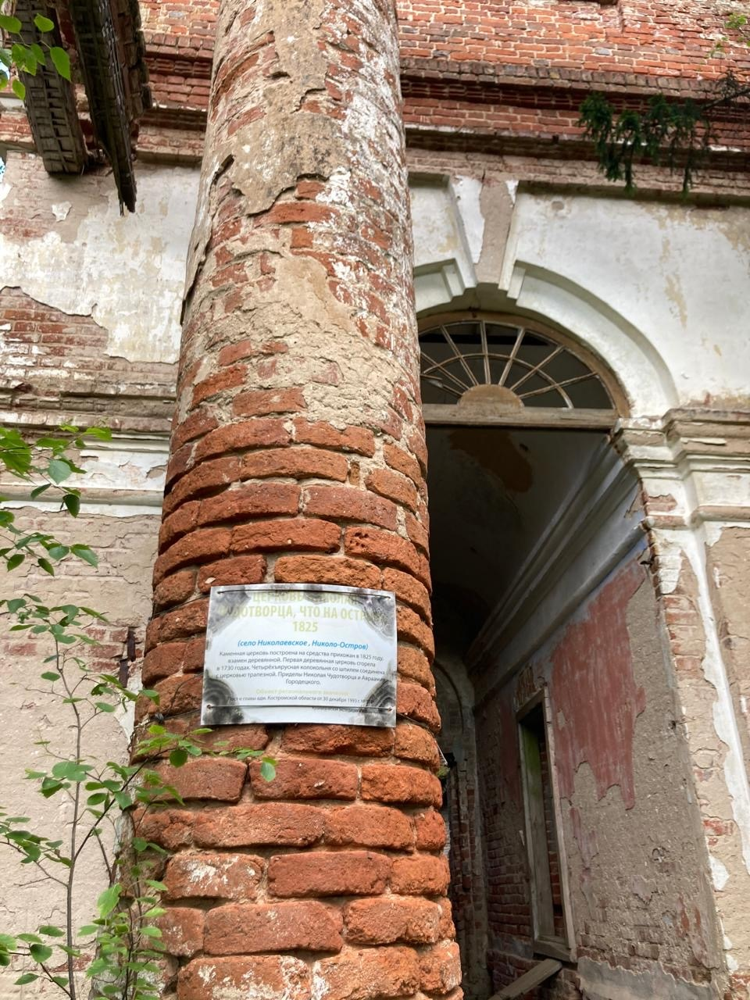
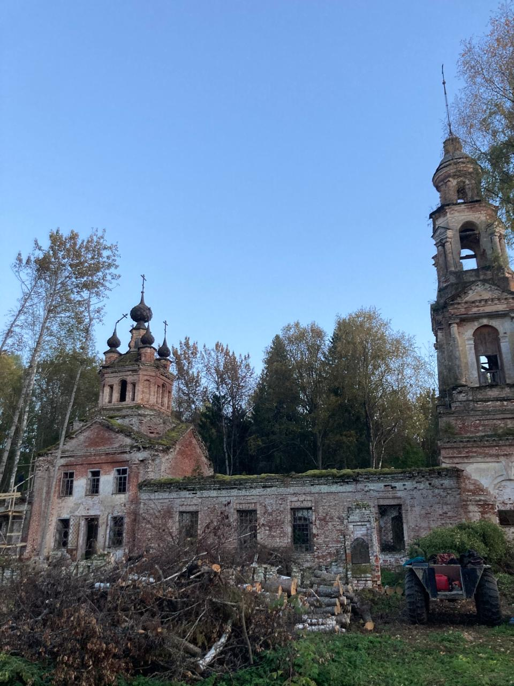

с. Мироханово
Главная
История
Храмы
с.Повалихино
Храм Ризоположения
Храм Николая Чудотворца
Храм иконы Божьей Матери Владимирской
Карта
Контакты
Обычно храмы в сельской местности строились «всем миром».
 